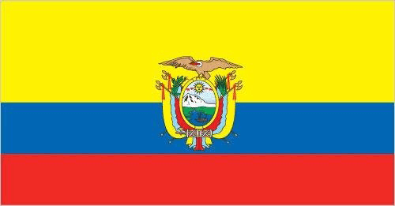
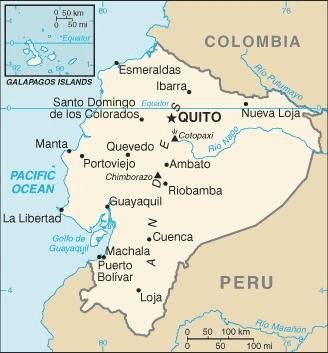

History
What is now Ecuador formed part of the northern Inca Empire until the Spanish conquest in 1533. Quito became a seat of Spanish colonial government in 1563 and part of the Viceroyalty of New Granada in 1717.Between 1904 and 1942, Ecuador lost territories in a series of conflicts with its neighbors. A border war with Peru that flared in 1995 was resolved in 1999. Although Ecuador marked 30 years of civilian governance in 2004, the period was marred by political instability.In late 2008, voters approved a new constitution, Ecuador's 20th since gaining independence. Guillermo LASSO was elected president in April 2021 becoming the country's first center-right president in nearly two decades when he took office the following month.
Flag
Map
Geography
Location
Ecuador is a country in western South America next to the Pacific Ocean, between Colombia and Peru. It lays in the Equatorial line which exactly passes through its capital, Quito.
Area
total: 283,561 sq km
land: 276,841 sq km
water: 6,720 sq km
Terrain
Ecuador has 4 regions:
One of the most famous tourism places to go in Ecuador is Galapagos Islands.
People and Society
Population - Growth Rate - Distribution
Distribution -> nearly half of the population is concentrated in the interior in the Andean intermontane basins and valleys, with large concentrations also found along the western coastal strip; the rainforests of the east remain sparsely populated
Languages
Quechua and Shuar are official languages of intercultural relations; other indigenous languages are in official use by indigenous peoples in the areas they inhabit.
Religions
Military and Security
Forces
Ecuadorian Armed Forces: the Ecuadorian Army (El Ejército Ecuatoriano), Ecuadorian Navy (Fuerza Naval del Ecuador, FNE, includes naval infantry, naval aviation, coast guard), Ecuadorian Air Force (Fuerza Aerea Ecuatoriana, FAE)
the National Police of Ecuador (Policía Nacional del Ecuador) is under the Ministry of Government
Military Expenditures
Service and age obligation
18 years of age for selective conscript military service, although conscription was suspended in 2008.
18 years of age for voluntary military service.
Ecuadorian birth requirement; 1-year service obligation.
Females have been allowed to serve in all branches since 2012.
In 2017, women made up an estimated 3% of the military.